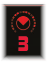

PRIMARY WEAPON
Each ship has up to two primary weapons listed on its ship card. Each primary weapon has an arc symbol and a red attack value. During a ship’s attack, it chooses a weapon to perform an attack with. If it performs an attack using a primary weapon, the attack value indicates how many attack dice it rolls during the Roll Attack Dice step and the arc symbol indicates where the defender must be located.

Primary Weapon on a Ship Card
-
A primary weapon requires the attack range to be range 0–3 and has no cost by default.
-
Since primary weapons are not special weapons, they do not benefit from abilities that trigger while performing a special attack.